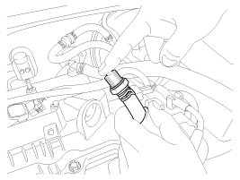

Positive Crankcase Ventilation Valve: Testing and Inspection
Inspection
1. After disconnecting the vapor hose from the PCV valve, remove the PCV valve.
2. Reconnect the PCV valve to the vapor hose.
3. Run the engine at idle, then put a finger over the open end of the PCV valve and make sure that intake manifold vacuum can be felt.
NOTE:
The plunger inside the PCV valve will move back and forth at vacuum.

4. If the vacuum is not felt inspect PCV operation, if operating correctly clean or replace the vapor hose.